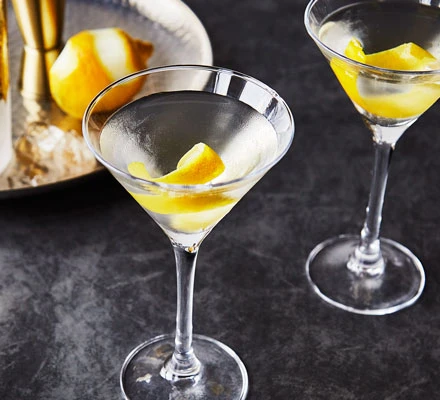

Martini

Description
The ultimate classic cocktail is stirred, not shaken. Serve your martini with a twist of lemon, or an olive.
Ingredients
- 60ml gin or vodka
- 1 tbsp dry vermouth
- olive or lemon peel, to garnish
Steps
-
Stir the gin or vodka, dry vermouth and a little ice together or put them in a cocktail shaker to combine.
-
Strain into a chilled martini glass. Serve with an olive on a cocktail stick or a twist of lemon peel.
Back to homepage